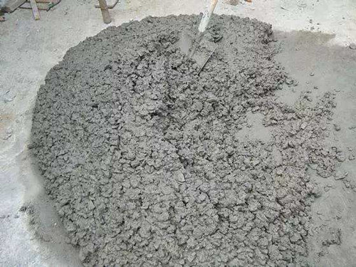
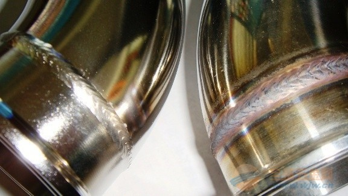
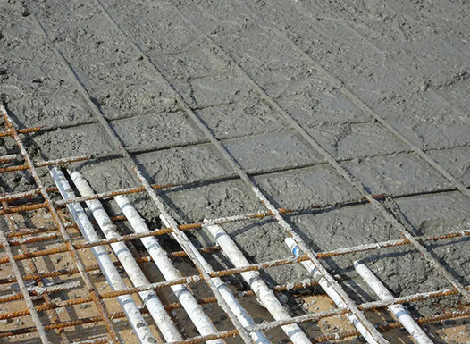

Introduction to Various Materials
Different materials have different chemical properties, and currently we mainly use them, which will be introduced in the following three categories: metals, plastics, and mixed materials
Material: Stainless steel

Stainless steel is a very durable and multifunctional material, which has a wide range of applications in many manufacturing industries. Stainless steel is an iron-based alloy that contains at least 10.5% chromium. Chromium gives stainless steel the characteristics of rust prevention and corrosion resistance, which is also the reason why it is named.
The advantage of stainless steel lies in its extremely high durability and strength. It can be used in many harsh environments, including high temperature and high pressure environments. In addition, stainless steel also has excellent oxidation resistance and corrosion resistance, which makes it widely used in many industries, such as construction, automobile manufacturing, food and beverage industries, etc.
However, the disadvantage of stainless steel is its high cost, especially compared to other common manufacturing materials such as carbon steel. In addition, the processing of stainless steel is also quite difficult, requiring specialized tools and techniques.
Overall, stainless steel is a widely used metal in the manufacturing industry, with its advantages in durability and versatility, but its high cost and processing difficulties.
Material: Polyethylene

Polyethylene is a thermoplastic resin polymerized from ethylene monomer (C2H4). Due to its low production cost and good processing performance, it has been widely used in the manufacturing industry.
The main advantages of polyethylene are its excellent chemical stability, acid and alkali resistance, resistance to most solvents, and good electrical insulation performance. In addition, polyethylene has a small specific gravity, only 0.92 times that of water, making it the lightest type of plastic among all, making it widely used in the packaging industry.
However, polyethylene has poor heat resistance and can only be used below 80 ℃ in general, and is flammable. In addition, the anti-aging performance of polyethylene is poor, so anti-aging agents need to be added in the production process.
In general, polyethylene is a kind of plastic widely used in the manufacturing industry. Its advantages lie in its good chemical stability and small specific gravity, but its heat resistance and aging resistance are poor
Material: Concrete

Concrete is a mixture of water, aggregates (sand, gravel, or pebbles), and cement. After mixing with water, cement undergoes a chemical reaction to form a viscous substance that binds the aggregates together, forming a hard, stone like substance.
The advantage of concrete lies in its extremely high compressive strength, as well as its good fire resistance and water resistance. In addition, the production cost of concrete is relatively low and the materials are readily available, which makes it widely used in the construction industry.
However, the strength of concrete mainly depends on its compressive strength, and its tensile strength is relatively low. In addition, the preparation process of concrete requires a large amount of water, which may become a problem in areas with scarce water resources.
Overall, concrete is a widely used mixed material in the manufacturing industry, which has the advantages of high compressive strength and fire resistance, but its tensile strength is low and the preparation process requires a large amount of water.
Two Upcoming Memory Alloys
Carbon nanotubes: Carbon nanotubes are tubular structures composed of carbon atoms, which are lightweight, high-strength, and have good conductivity and thermal conductivity. They have broad application potential in the fields of electronics, materials science, medicine, and energy, such as for manufacturing more efficient batteries, supercapacitors, sensors, and flexible electronic devices.

Graphene: Graphene is a two-dimensional lattice structure composed of carbon atoms, with excellent conductivity and thermal conductivity. It is also very lightweight and sturdy, making it an important material for the next generation of electronic devices and material applications.

Post Processing of Materials
Post treatment methods for stainless steel
There are many post-treatment methods for stainless steel, and one common method is passivation treatment. Passivation treatment is a chemical treatment method that forms a stable and inert oxide film on the surface of stainless steel to improve its corrosion resistance. This treatment method typically involves immersing stainless steel in a solution containing nitric acid or citric acid, then rinsing with water and drying. This process can improve the corrosion resistance of stainless steel because it can remove free iron and other impurities on the surface, which may cause corrosion. In addition, passivation treatment can also improve the appearance of stainless steel, as it can remove surface stains and abrasions. However, this processing method also has its drawbacks. Firstly, passivation treatment requires the use of acidic solutions, which may pose a hazard to the environment and operators. Secondly, if not handled properly, residue may be left on the surface of stainless steel, which may affect its performance. Overall, passivation treatment is an effective post-treatment method for stainless steel, which can improve its corrosion resistance and appearance, but also requires attention to safety and environmental issues during the treatment process.

Post treatment methods for polyethylene
There are many post-treatment methods for polyethylene, and one common method is heat treatment. Heat treatment is a physical treatment method that involves heating polyethylene to a certain temperature and then cooling it under controlled conditions to alter its internal structure and properties. This processing method typically involves heating polyethylene to a temperature above its melting point and then cooling it under controlled conditions. This process can change the crystallinity of polyethylene, thereby altering its mechanical properties such as strength, hardness, and toughness. In addition, heat treatment can also alter the thermal properties of polyethylene, such as melting point, thermal stability, and coefficient of thermal expansion. However, this processing method also has its drawbacks. Firstly, heat treatment requires the use of high temperatures, which may lead to the thermal degradation of polyethylene. Secondly, if not handled properly, it may lead to excessive crystallization of polyethylene, which may reduce its toughness. Overall, heat treatment is an effective post-treatment method for polyethylene, which can alter its mechanical and thermal properties, but also requires attention to temperature control during the treatment process.

Post treatment methods for concrete
There are many post-treatment methods for concrete, and one common method is curing. Curing is a physical treatment method aimed at maintaining the appropriate temperature and humidity of concrete during the hardening process to ensure that it achieves the designed strength and durability. This treatment method usually involves covering the concrete surface immediately after pouring, then regularly spraying water or using a damp cloth to maintain humidity, and avoiding excessive temperature changes. This process can ensure that the moisture in the concrete does not evaporate prematurely, thereby preventing premature drying and cracking of the concrete. In addition, curing can ensure that the temperature of the concrete is appropriate during the hardening process, thereby preventing a decrease in concrete strength caused by low or high temperatures. However, this approach also has its challenges. Firstly, maintenance needs to start immediately after concrete pouring and continue for a period of time, which may increase the complexity and cost of construction. Secondly, if not handled properly, it may lead to uneven color or other defects on the surface of the concrete. Overall, curing is an effective post-treatment method for concrete, which can ensure that the concrete reaches the designed strength and durability, but also requires attention to humidity and temperature control during the treatment process.

Back